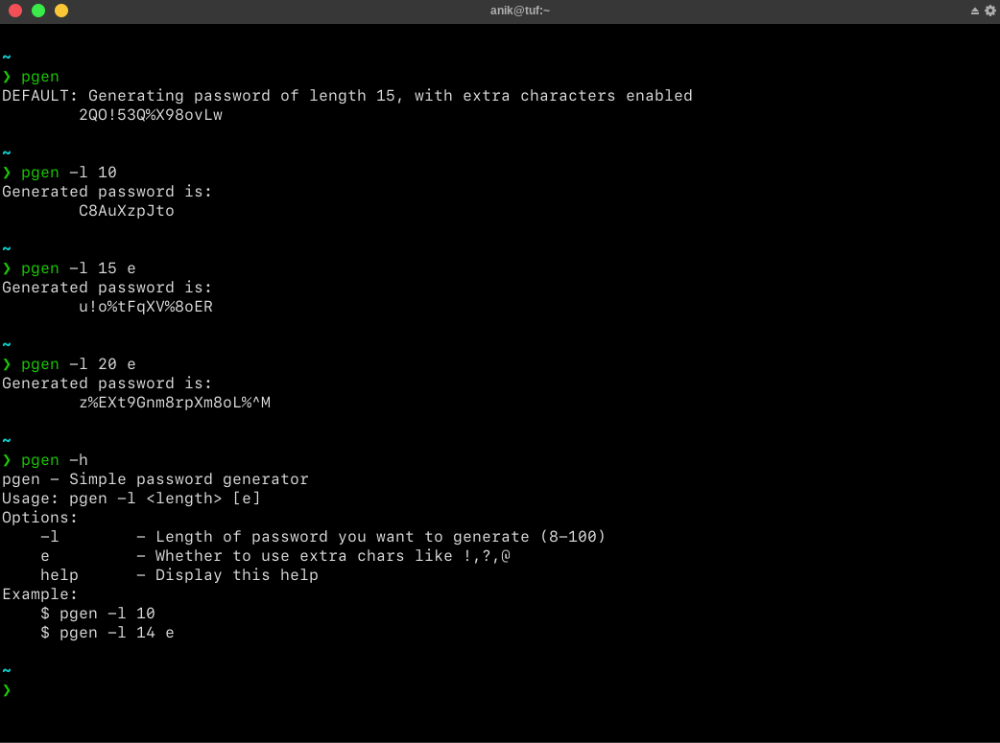

pgen - Simple Password Generator CLI written in C++
Requirements:
gcc/g++make~/.local/binin your PATH environment variable
Steps:
$ sudo apt-get install gcc make
$ git clone https://github.com/sadn1ck/pgen
$ cd pgen
$ mkdir -p ~/.local/bin/
$ vim ~/.bashrc
# Add this line to your bashrc or zshrc
# $USER = your username
# export PATH=/home/$USER/.local/bin:$PATH
# Change $USER with your user
$ source ~/.bashrc
# To build the binary from the source files
$ make build
# To copy built binary to the above directory so that it is available everywhere
$ make install
# To clean files and build while developing
$ make # or make all
WIP
- [ ] Tests
- [x] Docs
- [x] Separation into proper header files
